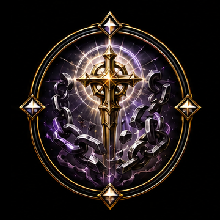
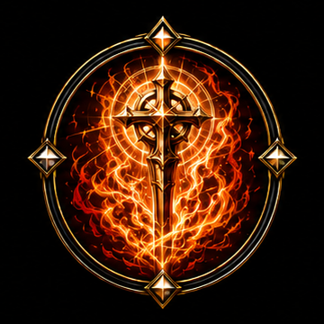

Cleric Subclass Icons — assigned
Cut from source art and installed at icons/cleric/ — live in the Character Codex.
Acolytecross & prayer beads
Healergreen radiant cross
Disciplecross & scripture banner
Priestcross & censer
Combat Mediccross & medical kit

Exorcistchained cross
Preachercross & scroll

Zealotflaming cross
Plague Doctorbeaked mask
Oracleall-seeing eye